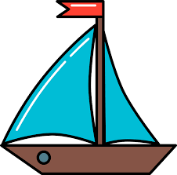

|  | Home Page | Points of sail | Digital charts | Courses | Rules of road |
| In Canada there are two manditory coourses that must be taken to operate a boat that has an engin. They are the pleasure craft oporators card and VHF(Very High Frequency) course. The the pleasure craft oporators couse is basicly a divers licence for boats. The VHF course must be taken if the boat has a fixed of handheld VHF radio or if you want to use the radio during non-emergeny situations to communicate with other vessels. |